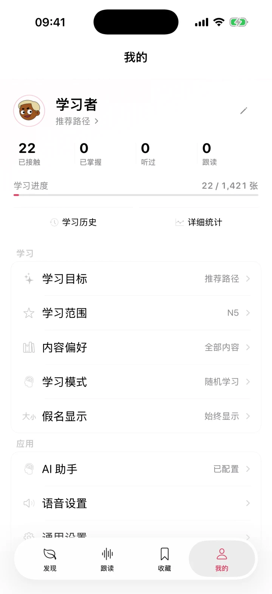

学习历史
按时间查看真实学习记录，打开历史条目可以回到对应学习点的详情。

Your pace, visible
樱语把统计解释为调整学习策略的工具，而不是制造虚假紧迫感的连续打卡。
按时间查看真实学习记录，打开历史条目可以回到对应学习点的详情。
查看活跃天数、掌握进度、复习预测、热力图与记忆曲线，并区分理论与实际数据。
选择推荐路径或自己的目标，设置 JLPT 范围、内容类型与学习模式。
内置解释来自随附内容，无需 API Key；在线生成可配置 DeepSeek 或 OpenAI。语音设置提供系统日语声音、试听、语速、音高与音量。